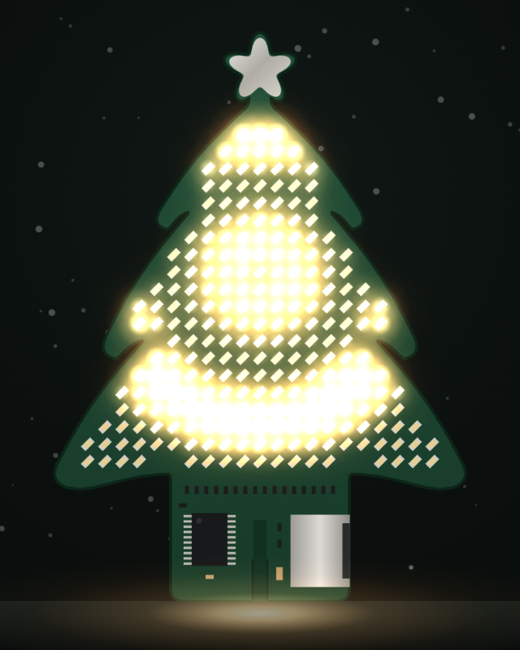
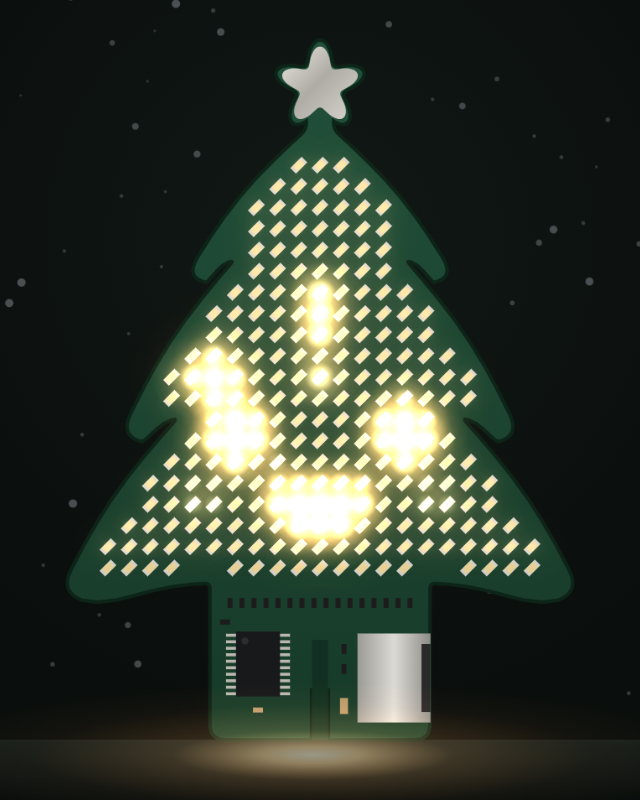
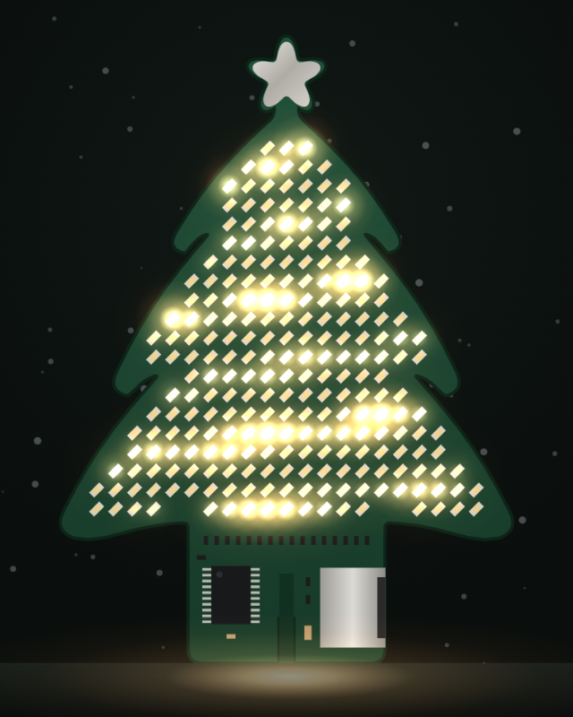
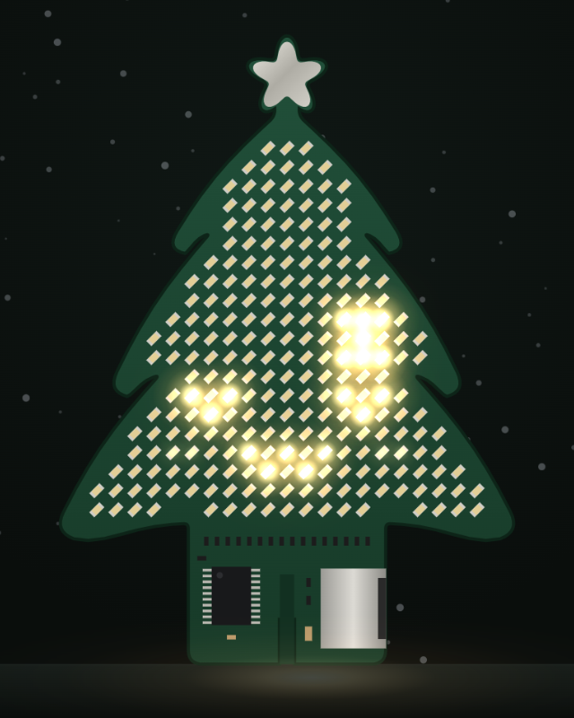
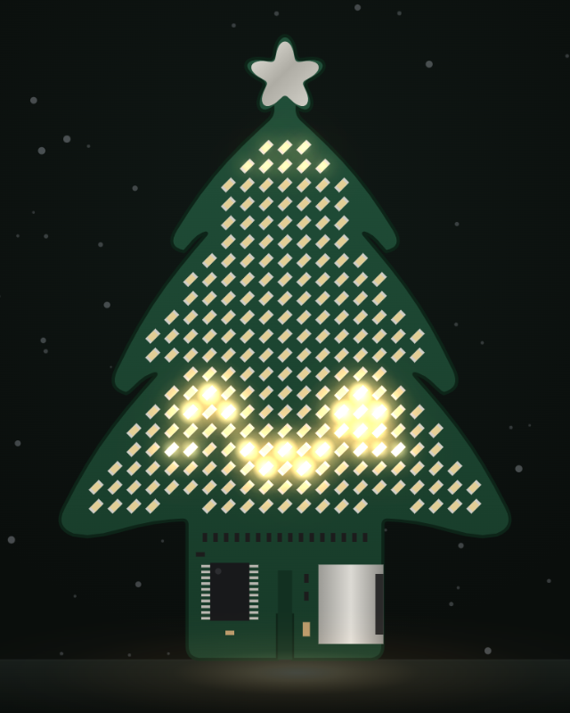
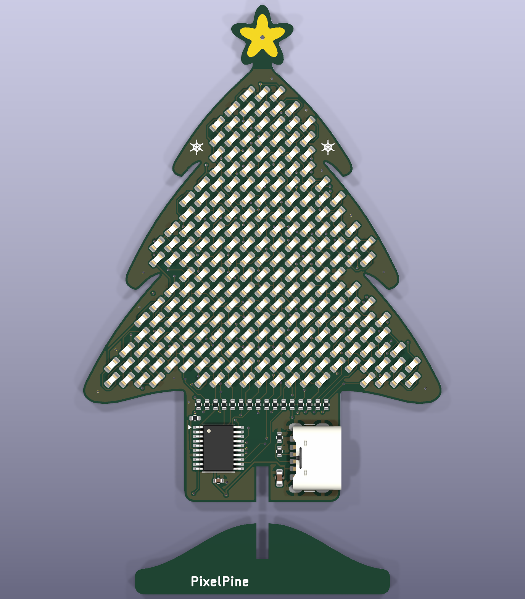
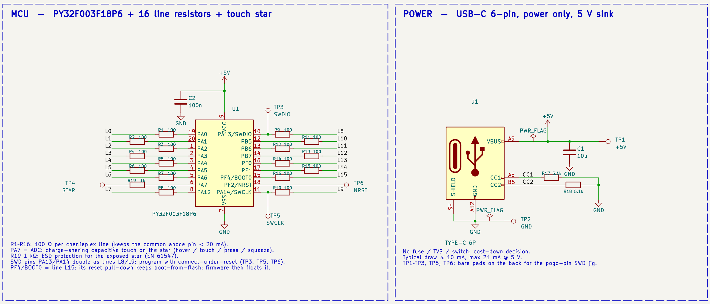
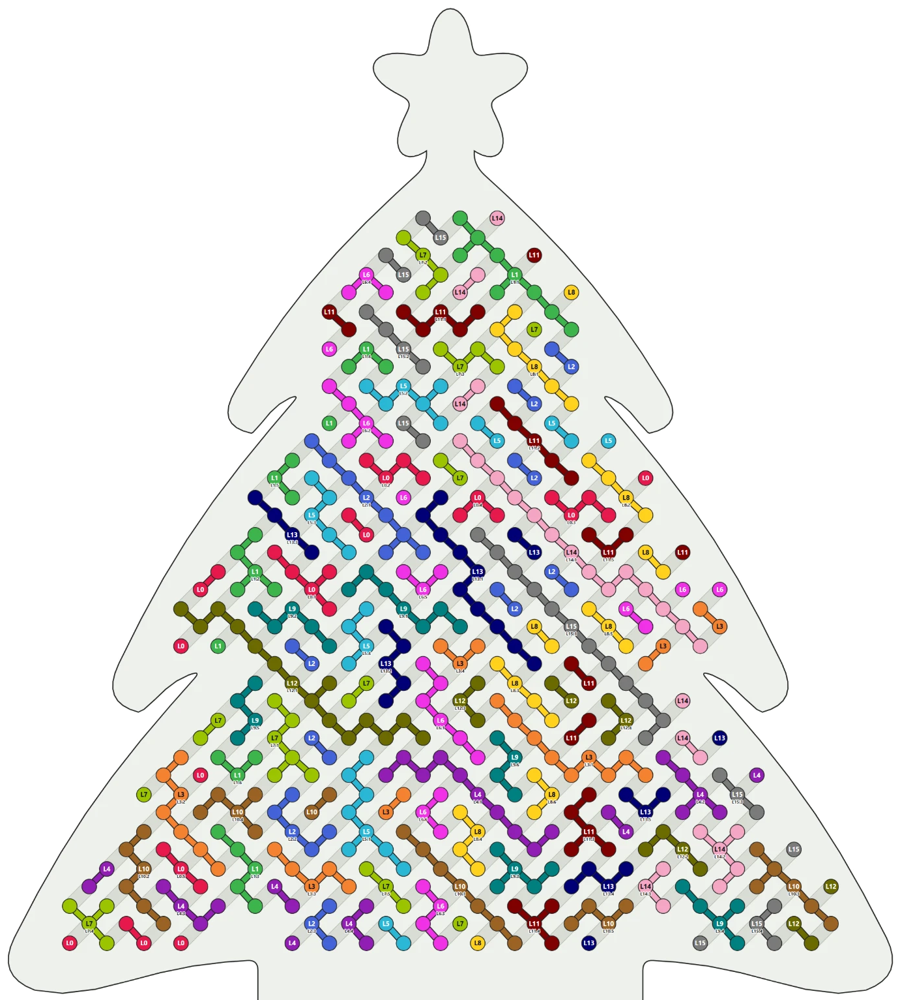
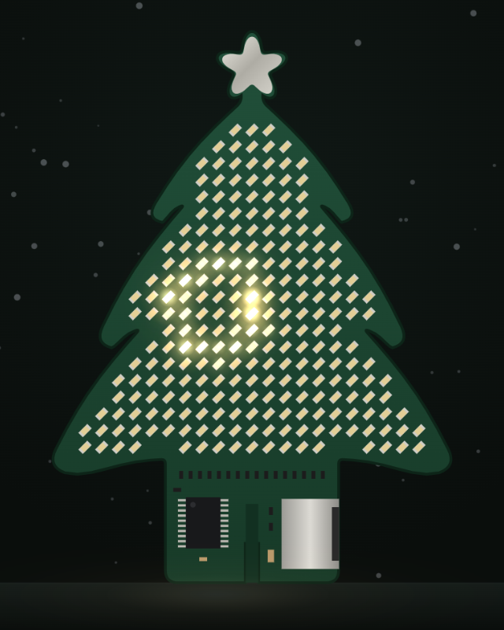

Funkce

Efekt: polární záře

Efekt: tlukot srdce

Animovaný výraz
15 světelných efektů
16 výrazů
Kapacitní dotyk: 6 gest
KTE · Projekt 1
Vánoční stromeček z plošného spoje: 240 LED, dotykové ovládání, napájení z USB-C.
Bc. Marek Mach · říjen 2026

Efekt: polární záře

Efekt: tlukot srdce

Animovaný výraz
15 světelných efektů
16 výrazů
Kapacitní dotyk: 6 gest

Stav: spánek

Reakce: lechtání
6 emocí: energie, soustředění, nálada, podráždění, nadšení, vztah
Stavy: probuzení, práce, snění, dřímání, spánek, nevrlost
Vztah k uživateli se ukládá do flash a zůstane i po vypnutí

240 LED
0603, teple bílé, rozteč 2,12 mm
16 vývodů
charlieplexing přímo z MCU, bez budiče
50,5 × 70 mm
FR-4 1,6 mm, 2 vrstvy, osazení z jedné strany

| Označení | Součástka | Ks | Cena / deska |
|---|---|---|---|
| D1–D240 | LED 0603 teple bílá, XL-1608WWC-06 | 240 | 1,36 $ |
| U1 | MCU PY32F003F18P6, TSSOP-20 | 1 | 0,148 $ |
| J1 | USB-C 6pin, jen napájení | 1 | 0,023 $ |
| C1 | 10 µF 10 V X5R 0603 | 1 | 0,022 $ |
| R1–R16 | 100 Ω 0402, vodiče matice | 16 | 0,013 $ |
| C2, R17–R19 | 100 nF, 2× 5,1 kΩ, 1 kΩ (0402) | 4 | 0,008 $ |
| Celkem | 8 položek, vše skladem LCSC | 263 | 1,57 $ |
Ceny LCSC při sérii 1 000 ks. LED tvoří 86 % ceny součástek.

480 → 141
plošek → měděných ostrůvků
Výsledek: autorouter propojí desku za 2 min na 2 vrstvách. Předtím po 87 min zůstalo 76 nespojených cest.
7 mA
průměrný odběr z USB-C, méně než 0,1 W
122 Hz
obnovovací frekvence, oko neuvidí blikání
27 % paměti
celý firmware má 17 KB z 64 KB
16 mA
nejvíc na jeden pin, limit čipu je 20 mA
| Série | 100 ks | 1 000 ks | 10 000 ks |
|---|---|---|---|
| Výroba a doprava do ČR | 3,83 € | 3,20 € | 1,98 € |
| Podíl na certifikaci CE | 27,00 € | 2,70 € | 0,27 € |
| Celkem za kus | 30,83 € | 5,90 € | 2,25 € |
Certifikace stojí jednou 2 700 €. Nejdražší díl jsou LED: 86 % ceny součástek.
Maloobchod
12,90 €
marže 3,08 € / ks
Vlastní e-shop
14,90 €
marže 7,99 € / ks
B2B s logem
6,90 €
bez DPH, marže 4,65 € / ks
Marže při sérii 10 000 ks. Maloobchodní ceny včetně 21 % DPH.
Stavebnice z AliExpressu stojí 2–4 $. PixelPine cílí na hotové dárkové produkty v pásmu 10–15 €.
Simulátor efektů:
Výrobní podklady pro JLCPCB jsou připravené.
